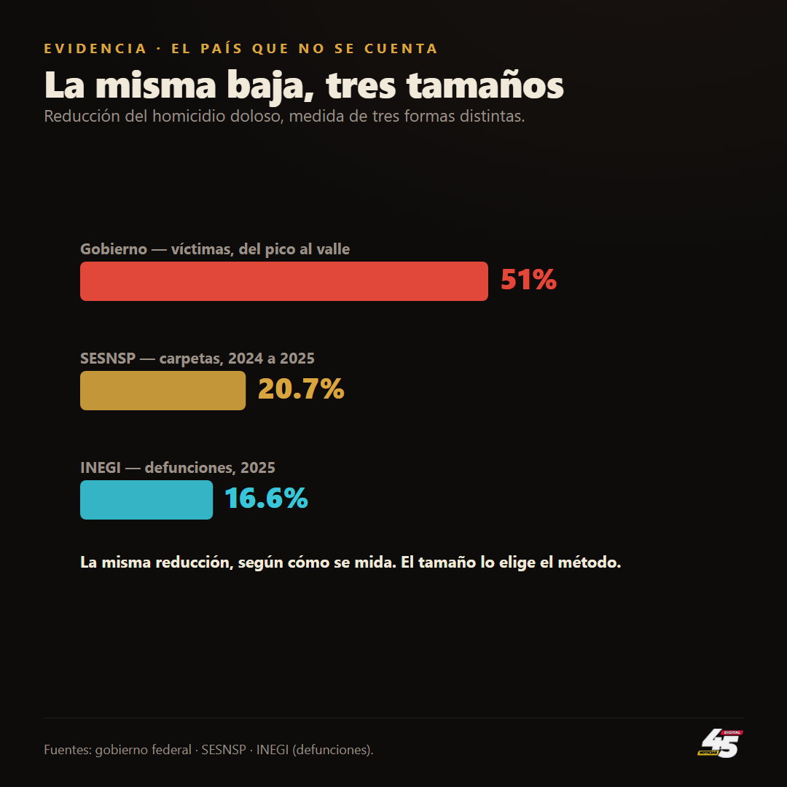
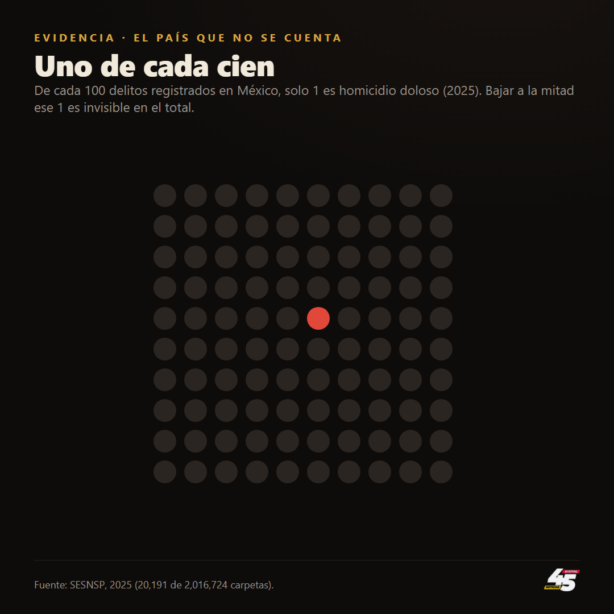
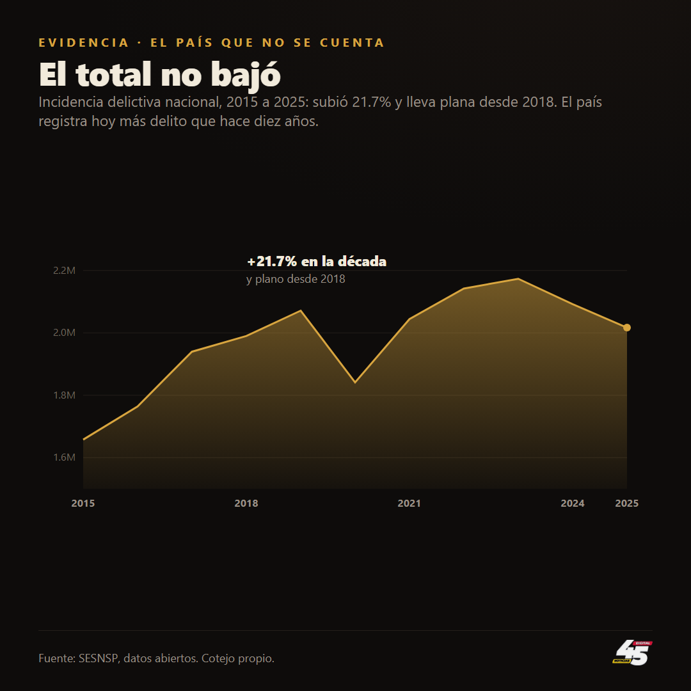
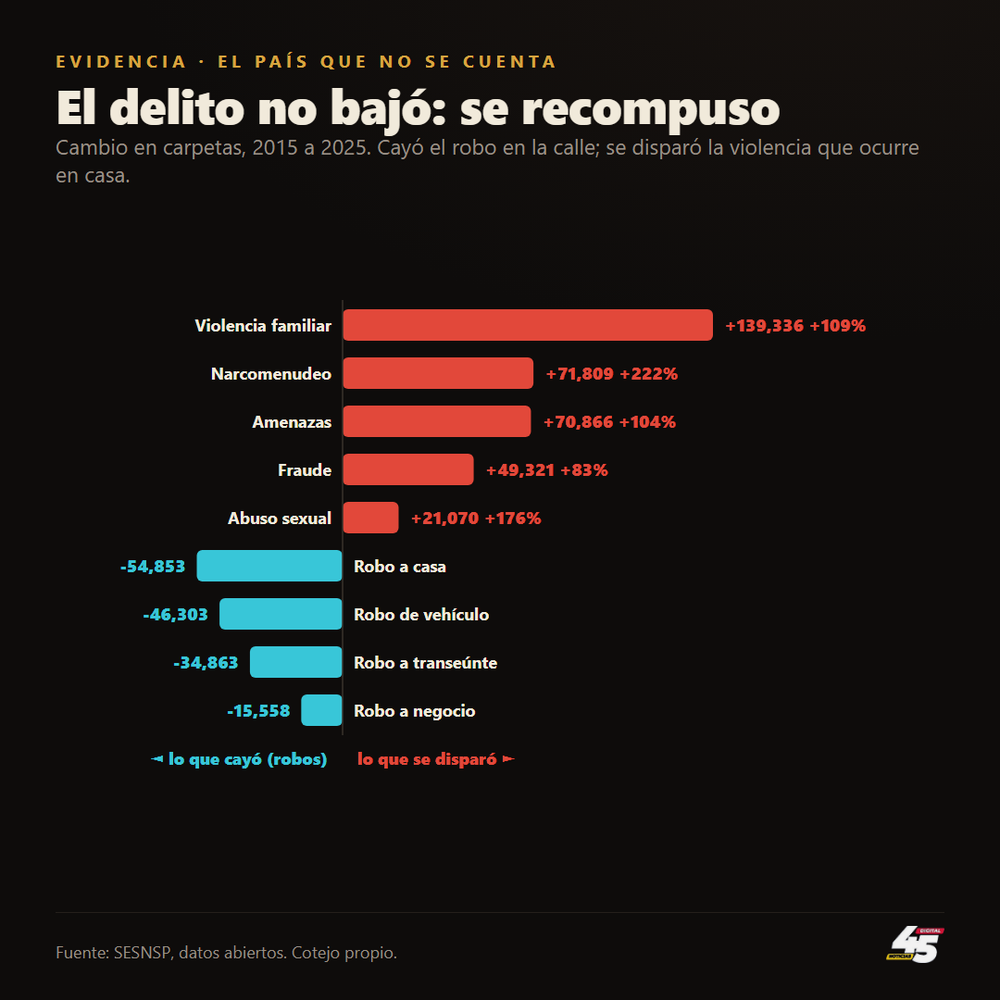
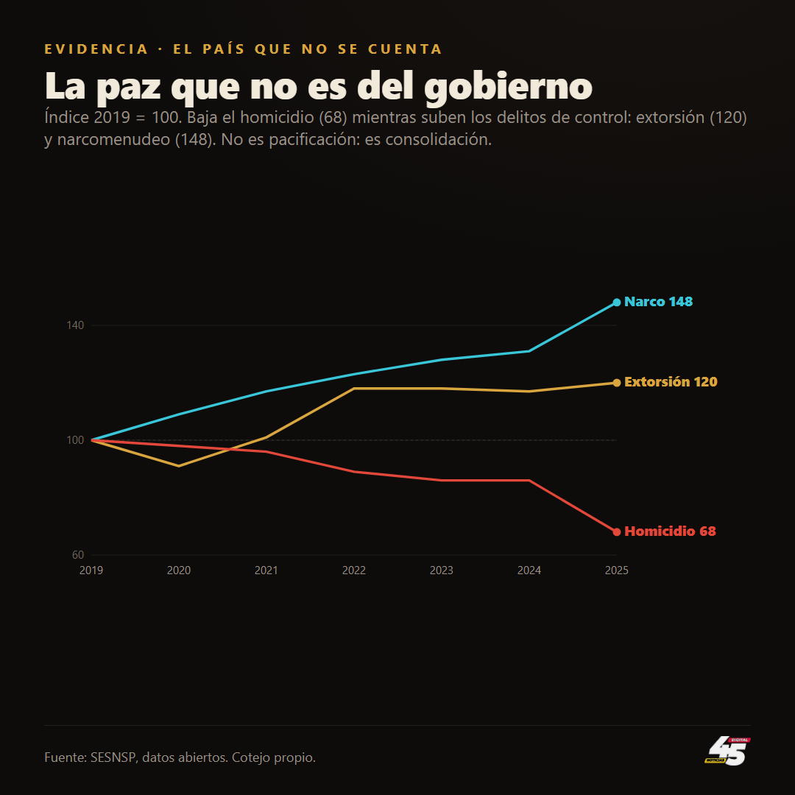
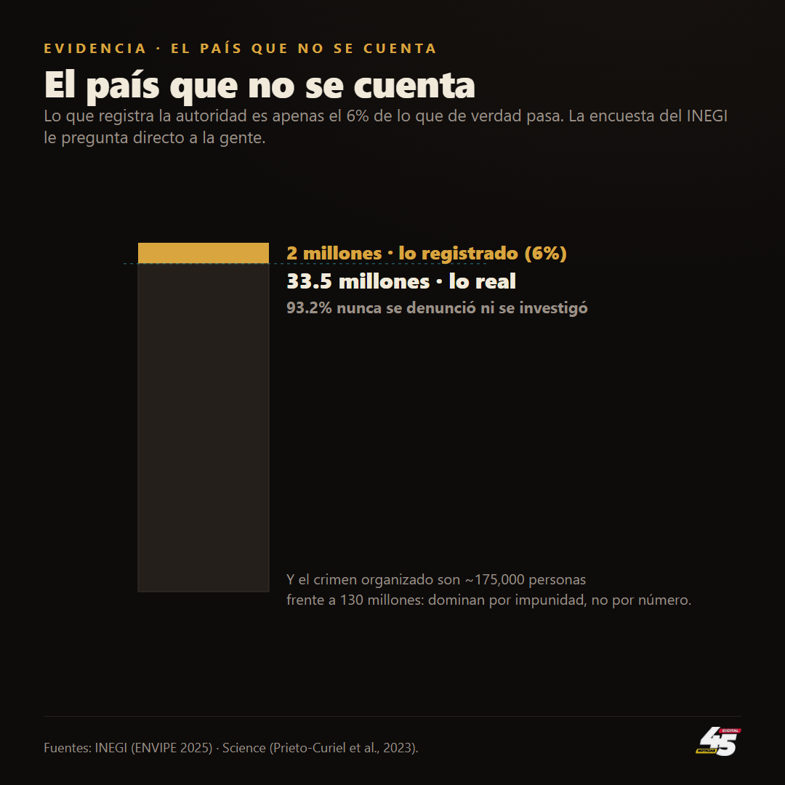

El país que no se cuenta
Esta mañana, desde la conferencia matutina, la presidenta Claudia Sheinbaum presumió que el homicidio doloso cayó 51 por ciento en 22 meses. La baja es real, y el INEGI la confirma con actas de defunción. Pero la cifra es un acertijo: el homicidio es apenas el 1 por ciento de todos los delitos del país, y el total no bajó, subió 21.7 por ciento en la década y lleva plano desde 2018. El delito se recompuso, cayó el robo en la calle y se dispararon la violencia familiar, más 109 por ciento, y los delitos sexuales. Y la forma de la baja delata su origen, el homicidio cede mientras la extorsión y el narcomenudeo suben, la huella de un crimen que se consolidó y no de un Estado que pacificó, según Gambetta, Trejo y Ley, y Durán-Martínez. Todo esto ocurre sobre el 6 por ciento de la realidad, porque el INEGI estima 33.5 millones de delitos al año, de los que el 93 por ciento nunca se denuncia. Con la ley de Goodhart, que popularizó Marilyn Strathern: cuando una medida se convierte en objetivo, deja de ser una buena medida.

La mañana del 11 de agosto, la presidenta Claudia Sheinbaum adelantó la cifra que ordenaría el día: "la reducción de homicidio doloso es de 51 por ciento entre septiembre de 2024 y julio del 2026" . Es un número grande, es un número bueno, y conviene empezar por lo cierto: el homicidio doloso bajó, y bajó de verdad. No lo dicen solo sus carpetas: el INEGI, que cuenta las muertes por acta de defunción y no depende de que una fiscalía las registre, midió una caída de 16.6 por ciento en 2025, la más baja desde 2016 . No hay logro más importante, porque una vida vale más que cualquier cartera. Pero la cifra viene con una pregunta que ella no invita a hacerse, y es la única que importa: ¿bajó la inseguridad, o bajó un delito?

Empecemos por el peso. En 2025 el homicidio doloso fue el 1 por ciento de todos los delitos registrados en el país: 20,191 carpetas de 2,016,724 . Uno de cada cien. Bajar a la mitad ese uno por ciento mueve medio punto de un total de dos millones; en el agregado, es invisible.

Y el agregado no se movió. Sumados todos los delitos, la incidencia nacional no cayó en la década: subió 21.7 por ciento, de 1,657,804 carpetas en 2015 a 2,016,724 en 2025, y desde 2018 está prácticamente plana . El país registra hoy más delito que hace diez años. Mientras la cifra estrella baja, la masa no se mueve.

No se mueve porque el delito no desapareció: se recompuso. Los robos cedieron, y con fuerza, el robo a casa habitación cayó 54,853 carpetas en la década, el de vehículo 46,303 . Pero en el mismo periodo se dispararon las violencias que ocurren adentro y no en la esquina: la violencia familiar creció 109 por ciento, el narcomenudeo 222, el abuso sexual 176, el acoso sexual 922 . El mapa del delito no se vació: se mudó de la calle a la casa.

Y ahí está el costo que ninguna lámina proyecta, porque la mujer golpeada en su cocina no aparece en la gráfica del 51 por ciento. El homicidio ocurre una vez; la violencia familiar se repite, día tras día, sobre la misma persona, y es de las que más creció.
Se gobierna la cifra, no la calle.
Hay algo más en la forma de esa baja. El homicidio cayó mientras la extorsión y el narcomenudeo subían: puestos en un índice con 2019 como base, el homicidio está hoy en 68, la extorsión en 120 y el narcomenudeo en 148 . Un sistema que de verdad pacifica no baja una violencia y sube dos: las baja todas. Este patrón, homicidio a la baja y delitos de control al alza, tiene nombre en la criminología, y no es el de un Estado que ganó. Diego Gambetta mostró que la mafia es, antes que nada, una industria de la protección: vende garantías donde el Estado no llega (The Sicilian Mafia, 1993). Angélica Durán-Martínez lo llevó a los datos (The Politics of Drug Violence, 2018): cuando un mercado criminal está monopolizado y el aparato estatal está coludido o ausente, la violencia baja y se vuelve invisible; cuando está en disputa, se dispara y se hace visible. Y Guillermo Trejo con Sandra Ley lo anclaron a México (Votes, Drugs, and Violence, 2020): la violencia estalla cuando se rompen los pactos de protección entre autoridades y crimen, y se apaga cuando alguien vuelve a imponer orden, aunque ese alguien no sea el Estado. La baja del homicidio puede ser, entonces, un dividendo de control del crimen, no un dividendo de paz del gobierno.

No es solo teoría extranjera: México Evalúa, en su reporte de 2026, lo dijo casi con las mismas palabras, que el reto es demostrar que la caída de homicidios corresponde a una reducción integral de la violencia y no solo a un cambio en sus formas, registros o territorios, y recordó que la extorsión opera sistemáticamente sin dejar cuerpos .
Conviene ser honesto con las fechas, porque aquí es fácil resbalar. El pico de violencia no lo prendió la política de "abrazos no balazos": el homicidio se disparó 80 por ciento entre 2015 y 2018, antes de este gobierno, por la fragmentación de los cárteles . Lo que la no confrontación pudo hacer no fue encender el fuego, sino dejar que un orden criminal se asentara sobre las brasas. Y donde el crimen gobierna, se mata menos y se extorsiona más.
Pero todo lo anterior, la baja, la recomposición, el pacto, ocurre sobre una porción diminuta de la realidad. Aquí entra la única fuente que no depende de que la autoridad quiera registrar: la Encuesta Nacional de Victimización del INEGI, la ENVIPE, que le pregunta directo a la gente. Su resultado de 2025 es demoledor: en 2024 se cometieron 33.5 millones de delitos en México, y el 93.2 por ciento no se denunció ni se investigó . Los dos millones de carpetas por las que se pelea la mañanera son apenas el 6 por ciento de lo que de verdad pasa. Veintitrés millones de personas fueron víctimas, casi tres de cada diez hogares, y los delitos que más se ocultan son, justamente, la extorsión y el secuestro, con 97 y 98 por ciento de cifra negra . El país que discute el 51 por ciento no es el país donde vive la gente.

Y está la desproporción que no cuadra. Si el crimen organizado tuviera en jaque a un país entero, uno supondría que son legiones. No lo son. El matemático Rafael Prieto-Curiel estimó en la revista Science (2023) que los cárteles mexicanos suman entre 160 y 185 mil miembros, alrededor de 175 mil: el quinto mayor "empleador" del país, que recluta unas 350 personas por semana . Ciento setenta y cinco mil frente a 130 millones de habitantes. Uno por cada 740. ¿Cómo dominan? No por número, por impunidad: con 93 por ciento de delitos sin castigo, un grupo armado no necesita ser grande, necesita que el Estado no esté. Su poder es la ausencia del Estado, no su propia masa. Por eso conviene no confundir las dos cosas: crimen organizado no es lo mismo que criminalidad. Los 175 mil no cometen los 33.5 millones de delitos; la mayoría de lo que hace sentir insegura a la gente, el fraude, el robo, la violencia en casa, no la cometen los cárteles. Se pelea por el homicidio, que es el 1 por ciento, mientras el 94 por ciento de la inseguridad ni se nombra.
El economista Charles Goodhart lo advirtió hace medio siglo, y la antropóloga Marilyn Strathern lo volvió frase: cuando una medida se convierte en objetivo, deja de ser una buena medida. El homicidio se volvió el objetivo, el número que se cuida, se mide y se proyecta cada mañana, y al volverse objetivo dejó de describir la seguridad del país para describir el éxito de la estrategia. Se gobierna la cifra, no la calle.
No acuso a nadie de inventar números; cada dato que se presentó esta mañana existe, y la baja del homicidio es un avance que merece reconocerse. Lo que ofrezco, como opinión, es otra cosa: reducir el delito más grave no es lo mismo que reducir la inseguridad; una baja que llega con más extorsión no es una paz que firme el gobierno; y un país donde 9 de cada 10 delitos nunca se cuentan no se conoce por la cifra que se presume, sino por la que se calla. La pregunta que la mañanera no hizo se la puede hacer cualquiera: si de verdad estamos más seguros, ¿por qué el total no baja, por qué crece la violencia que entra hasta la cama, y por qué el país que sí se cuenta es apenas el seis por ciento del que existe?
Pieza hermana: El Gotham que no cuadra Ver el expediente →
- Declaración de la presidenta Claudia Sheinbaum, conferencia matutina del 11 de agosto de 2026 (transcripción propia; cápsula en el expediente). Prensa: El Universal · Heraldo de México · Tribuna (86.9 a 42.5 víctimas/día).
- Incidencia delictiva nacional 2015-2025 (total, homicidio y por delito): SESNSP, datos abiertos de incidencia delictiva, cotejo propio (`series_mensuales`).
- Cifra negra y magnitud real del delito: INEGI, ENVIPE 2025 (boletín: 93.2 por ciento no denunciado; 33.5 millones de delitos; 23.1 millones de víctimas).
- Tamaño del crimen organizado: Rafael Prieto-Curiel, Gian Maria Campedelli y Alejandro Hope, "Reducing cartel recruitment is the only way to lower violence in Mexico", Science (2023). Artículo · perfil en Nature.
- Homicidio por acta de defunción (serie independiente del SESNSP): INEGI, estadísticas de defunciones por homicidio 2025 (27,989 muertes; −16.6 por ciento; la más baja desde 2016). Vía La Razón / INEGI.
- Fragilidad de la baja y violencia letal ampliada: México Evalúa, Violencia y Paz, reporte anual (feb-2026): el homicidio doloso seguía ~30.7 por ciento arriba de 2015 y el indicador ampliado de muertes violentas creció 68.2 por ciento en la década; extorsión y narcomenudeo, más del 90 por ciento de los delitos ligados al crimen organizado en 2025. PDF.
- Marco teórico (verificado): Diego Gambetta, The Sicilian Mafia: The Business of Private Protection (Harvard University Press, 1993) ficha; Angélica Durán-Martínez, The Politics of Drug Violence: Criminals, Cops, and Politicians in Colombia and Mexico (Oxford University Press, 2018) ficha; Guillermo Trejo y Sandra Ley, Votes, Drugs, and Violence: The Political Logic of Criminal Wars in Mexico (Cambridge University Press, 2020) DOI; Charles Goodhart, "Problems of Monetary Management: The U.K. Experience" (1975), en la formulación popularizada por Marilyn Strathern (1997); Eduardo Guerrero-Gutiérrez, "La raíz de la violencia", Nexos, 1 de junio de 2011 enlace.
- Piezas hermanas del expediente: El Gotham que no cuadra y El semestre que subió (45 Digital Noticias).
Las ligas van a la vista para que cualquiera compruebe por su cuenta. Si alguna dejó de resolver, escríbenos y la reponemos.
SRVO